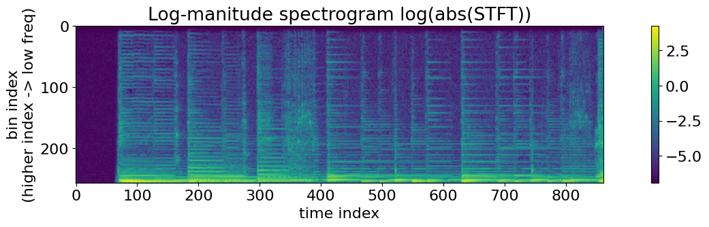
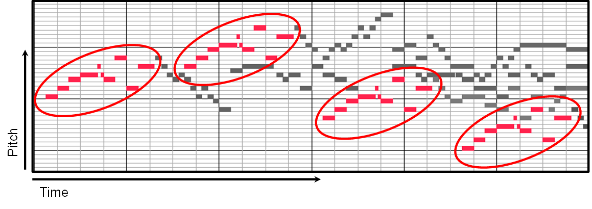
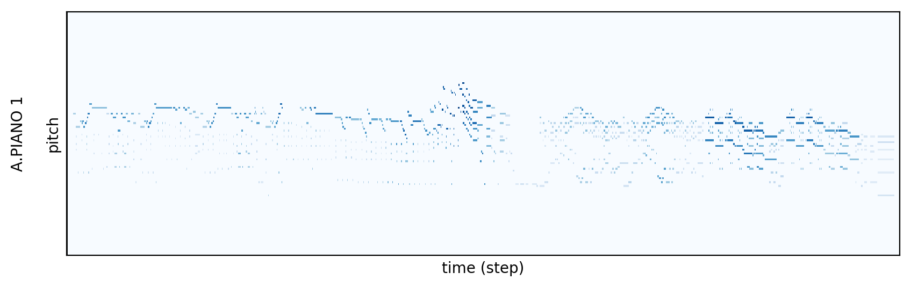

In Lesson 1, we treated music as a physical recording: a continuous stream of pressure samples capturing air vibrations, room reverberation, microphone noise, and harmonic decay.
That is a record of sound.
There is an entirely different way to represent music in machine learning: as a recipe. Instead of recording how the air moved, you record the instructions required to make the sound in the first place—which key was pressed, when it was struck, how hard it was hit, and when it was released.
This recipe format is known as MIDI (Musical Instrument Digital Interface).
The divide between symbolic recipes and continuous records shapes modern generative audio:
To design generative pipelines, you need to understand both representations, how to convert between musical intervals and physical frequencies, and how 2D musical scores flatten into 1D token sequences for Transformers.
Western music organizes continuous pitch space into discrete note names:
Moving from one note to the immediate next note (whether white or black on a keyboard) is an interval of one semitone (or half step).
A cycle of 12 semitones forms an octave.
Perceptually, an octave jump sounds like the "same" note played higher. Physically, moving up an octave exactly doubles the frequency:
A standard piano keyboard contains 88 keys, spanning from the lowest note A0 up to the highest note C8.
Computers represent musical pitches as integer values ranging from \(0\) to \(127\).
By international MIDI standard:
Because Western instruments rely on the 12-tone equal-temperament system, every octave is divided into 12 mathematically equal frequency ratios:
Multiplying a frequency by \(\approx 1.05946\) shifts the pitch up by exactly one semitone. Compounding this ratio 12 times yields \(r^{12} = (2^{1/12})^{12} = 2\), doubling the frequency.
To calculate the fundamental frequency \(f\) in Hertz for any integer MIDI note \(n\), anchor the calculation at Concert A (\(n = 69\), \(f = 440\text{ Hz}\)):
Concert A (A4, \(n = 69\)):
Middle C (C4, \(n = 60\)):
High C (C5, \(n = 72\)):
Notice that \(523.25\text{ Hz} = 2 \times 261.63\text{ Hz}\). Moving \(+12\) semitones from MIDI 60 to MIDI 72 doubles the frequency.
Enter a MIDI note, see \(f(n)\), and play a sine at that frequency. A real instrument at the same MIDI number would add the harmonics from Lesson 1—MIDI stores the recipe, not the timbre.
MIDI note \(n\):
A MIDI file does not contain a single pressure sample or Fourier coefficient. It contains a time-ordered sequence of instructions.
The two core messages that define performance data are:
NOTE_ON (channel, pitch, velocity): Triggers a note. Velocity is an integer from \(0\) to \(127\) indicating strike force. Synthesizers map higher velocity to louder volume, sharper attacks, and brighter harmonic content.NOTE_OFF (channel, pitch): Releases the note, initiating its decay envelope.Auxiliary messages handle global performance parameters, such as Tempo Changes (BPM), Control Changes (sustain pedal, mod wheel), and Program Changes (instrument patches like Acoustic Grand vs. Electric Bass).
Consider a 4-note ascending arpeggio (C4, E4, G4, C5) lasting 2.0 seconds at a tempo of 120 BPM (where 1 beat = \(0.5\text{ seconds}\)).
The symbolic stream contains only 8 lightweight events:
t = 0.00s NOTE_ON channel=0 pitch=60 velocity=90 t = 0.50s NOTE_OFF channel=0 pitch=60 t = 0.50s NOTE_ON channel=0 pitch=64 velocity=90 t = 1.00s NOTE_OFF channel=0 pitch=64 t = 1.00s NOTE_ON channel=0 pitch=67 velocity=90 t = 1.50s NOTE_OFF channel=0 pitch=67 t = 1.50s NOTE_ON channel=0 pitch=72 velocity=90 t = 2.00s NOTE_OFF channel=0 pitch=72
The raw audio recording requires over 1,400 times more data to store the exact same musical sequence.

Digital Audio Workstations (DAWs) and machine learning frameworks often structure MIDI as a Piano Roll matrix:
A piano roll tensor \(R\) can be modeled as a binary occupancy grid or a velocity-weighted matrix:
For a full 88-key piano discretized across 512 rhythmic steps (e.g., 32 bars of sixteenth notes), the entire score fits inside an \(88 \times 512\) matrix:
Because most notes are not active simultaneously, this tensor is extremely sparse (predominantly zeros). Multiple active notes in a single time column naturally represent polyphonic chords.
Connection to Computer Vision: Because a piano roll is a 2D grid of values, early generative models treated composition as an image-generation problem. Models like Google Magenta's Coconet used 2D Convolutional Neural Networks (CNNs) with masked convolutions to fill in missing notes across counterpoint voices.


Click cells to toggle notes (pitch ↑, time →). Play the recipe. Toggle MIDI vs raw-audio footprint to reuse the file-size math from Lesson 1.
Pitch ↑ · Time → · each column is 0.25 s
While CNNs can process 2D piano-roll matrices, Transformers require a 1D sequence of discrete tokens.
To train an autoregressive language model on music, researchers translate musical score events into an explicit sequence vocabulary. One widely used tokenization standard is REMI (Revamped MIDI, Huang & Yang 2020).
Instead of relying on raw millisecond timestamps, REMI defines an event vocabulary tailored to musical meter:
Bar: Marks the start of a musical measure.Position: Sub-beat index within the current bar (e.g., positions \(1\) through \(16\) for sixteenth-note quantization).Pitch: The MIDI note number (\(0\) to \(127\)).Duration: Length of the note in quantization steps.Velocity: Performance intensity bucketed into discrete levels.Every individual note decomposes into an ordered tuple of 4 tokens:
For our 4-note arpeggio in a single measure of 4/4 time:
[Bar_0, Pos_0, Pitch_60, Dur_4, Vel_90, Pos_4, Pitch_64, Dur_4, Vel_90, Pos_8, Pitch_67, Dur_4, Vel_90, Pos_12, Pitch_72, Dur_4, Vel_90]
However, this compression comes with an expressive tradeoff: REMI cannot capture the resonant timber of a hollow-body guitar, the breath of a vocalist, room acoustics, or subtle audio distortions. Those details exist only in the continuous acoustic record.
| Attribute | Symbolic Representations (MIDI, REMI) | Continuous Audio Records (PCM, Spectrograms) |
|---|---|---|
| Data Type | Discrete instructions and event lists | Continuous floating-point physical pressure |
| Typical File Size | \(2\text{ to }50\text{ KB}\) for an entire multi-track song | \(\approx 30\text{ MB}\) for a 3-minute stereo uncompressed WAV |
| Transposition / Editing | Trivial: add an integer to all pitch tokens (\(\Delta n = +2\)) | Complex: requires phase vocoders or digital pitch-shifting DSP |
| Instrument Swapping | Instant: change the synthesizer program ID | Difficult: requires deep audio source separation and voice conversion |
| Acoustic Realism | Zero inherent sound; depends entirely on downstream synthesis engine | Full fidelity: captures vocal timbre, room acoustics, distortion, and breath |
| Transformer Fit | Native: standard token vocabulary and sequence lengths | Requires heavy compression via Neural Codecs (Lesson 3) |
The Google Bach Doodle demonstrated conditional symbolic generation at scale. The engine behind the Doodle is Coconet, an architecture trained on 389 four-part Bach chorales.
Try it: Google Doodle — Celebrating J.S. Bach · Background: Magenta Coconet
A Bach chorale consists of four separate polyphonic voices: Soprano, Alto, Tenor, and Bass. The score is represented as a 3D binary tensor of shape \((B, T, P, V)\), where:
Instead of generating autoregressively left-to-right, Coconet is trained via masked convolutional modeling (analogous to masked language models like BERT):
Coconet demonstrates why symbolic models excel at compositional logic: the network learns harmonic counterpoint rules directly without expending parameter capacity reconstructing waveforms or audio fidelity.
Question: A bass guitar plays MIDI note \(n = 33\) (A1). What is its exact fundamental frequency in Hertz? If a synthesizer plays a note three octaves higher, what is its MIDI number and frequency?
Step-by-step arithmetic:
Question: A generative Transformer uses a REMI token format where each note requires 4 tokens [Position, Pitch, Duration, Velocity], and each measure begins with a [Bar] token. If the model generates an 8-measure chord progression containing 4 voices playing whole notes simultaneously on every measure, what is the exact token length of the generated sequence?
This raises an essential architectural question: If symbolic models cannot generate actual sound, and raw waveforms are too long for Transformers, how do modern models like MusicGen and Suno generate high-fidelity audio from text prompts?
In Lesson 3, we explore Neural Audio Codecs (EnCodec, SoundStream, DAC)—deep autoencoders with Residual Vector Quantization (RVQ) that compress raw waveforms directly into discrete token dictionaries.